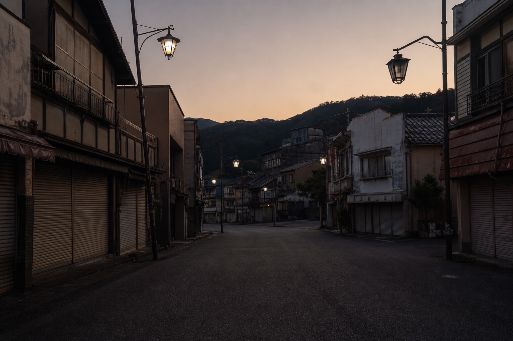
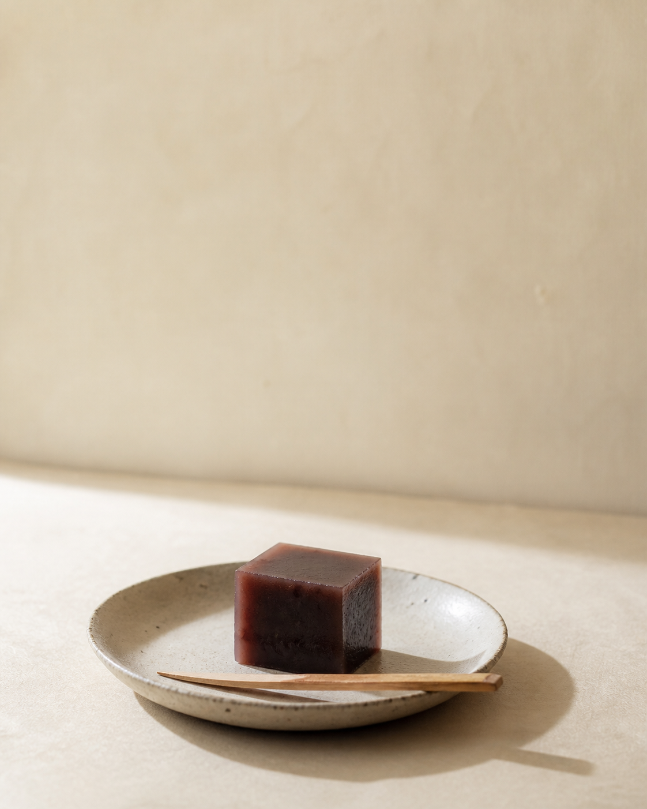

Nikko · Kinugawa — 两日
盛世退潮的样子
日光 · 鬼怒川2026.07 · 王建硕
Nikko · Kinugawa — 两日
Night One · 到达
到日光的时候，天已经黑了。街上基本上没有人。
路灯有的亮，有的不亮——不是停电的那种黑，是坏了、也没有人急着修的那种黑。
这两天印象最深的，不是温泉，是一种老旧。
浅草 ↓
REVATY 特急
日光 · 夜
半明半暗
无人的主街
Field Note · 一百米

主街 · 黄昏 · 卷帘门一路放到底
住的 Fairfield 是新的，干净、标准，和世界上任何一家 Fairfield 一样。走出门一百米，又回到那条半明半暗的街上。
Day Two · 主街
一家
挨着
一家。
第二天白天再看，主街上有一片，全是卖羊羹的店。
一条街能全靠羊羹活下来，说明来的人，曾经多到什么程度。
泡沫年代，公司出钱的团体旅行，把这些山谷塞得满满的。
Before · After
Before · 泡沫年代
After · 人潮退去
有点像老厂区的工人文化宫，厂子不行了，楼还体面地站在那里。也像节后的县城，街还是那条街，人一下子被抽走了。
Evidence · 水羊羹

凉凉的 · 比普通羊羹嫩 · 甜得很收敛
大酒店
会空掉
团体旅行
会消失
一块水羊羹
一代一代做了下来
回程 · REVATY 特急
不吓人，
也不凄凉，
就是安安静静地，
比从前小了一圈。